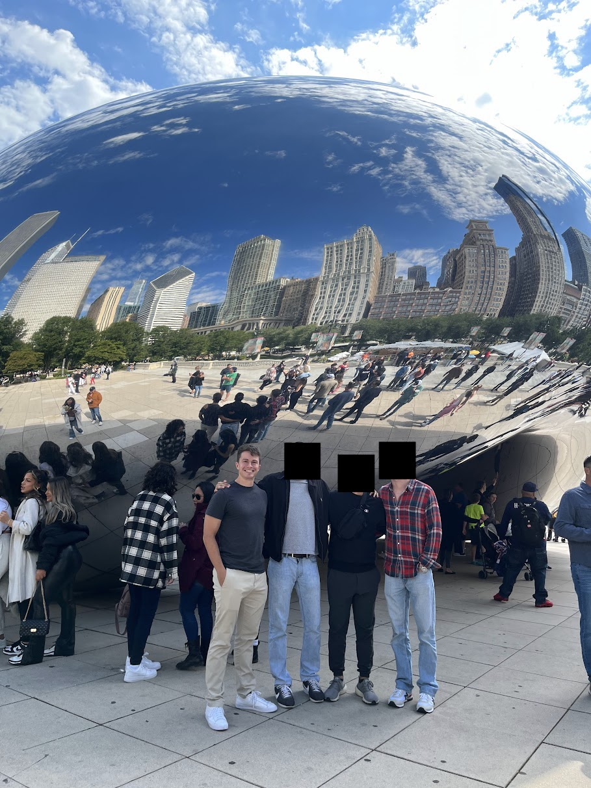

Chicago trip report from 24-26 September 2022.
I landed at the lovely O'Hare airport around 9:30am and quickly made my way over to the terminal my friends (C, E, F) landed at. Supposedly passengers are allowed to carry on as many mini liquor bottles as they want... we celebrated this fact by taking a rather disgusting morning shot of Deep Eddy's before hopping in the Uber to head to our hotel in downtown.
We traveled on the highway through the vast suburban sprawl that made up the outskirts of Chicago, the lonely skyline looming in the distance. Our driver gave some timid suggestions on things to do and see around the city before he dropped us off at our hotel, the Freehand Chicago. Famous for its hostel-style rooms, we stayed in a single room comprised of two bunk beds (so four beds total), a short L couch, and a simple bathroom. The room immediately smelled like weed upon entering, but our noses quickly adjusted while we unpacked. Frankly, if you're traveling fairly light and don't plan to spend much time in the hotel, this place is a solid choice: heart of downtown Chicago, very cheap compared to other hotels, has all the essentials needed (including a gym and laundry), and is well-kempt.
We dropped off our stuff at the front desk since we were five hours early for check-in and headed out to find some breakfast. We walked south on the Magnificent Mile. I was astounded at some of the real estate these retailers had. Burberry had a multi-story building—what?! But when all the major shopping is concentrated in one mile on one street, it makes sense they'll try to capitalize on it. Breakfast was at Pittsfield Cafe, located in an atrium-like part of a decrepit building. Go to the basement and you'll know what I'm talking about. I had an omelette with potatoes, toast, and a bagel.
We headed to the renowned Cloud Gate (colloquially and affectionately known as The Bean) in nearby Millenium Park and took the typical touristy pictures before exploring the park a bit more. Heading north forced us east due to the lakeshore, leading us to Navy Pier. We watched an impressive youth talent show of acrobatics, handbalancing, Cyr wheeling, and dancing, ate our first Chicago dogs and beers, and watched the passerby.
We headed back to the Freehand to officially check in and relax after a long day of walking. Shirts were changed, showers were taken, and phones charged as we prepared for the long night ahead. First stop was Cindy's, an upscale rooftop restaurant and bar inside the Chicago Athletic Association Hotel across from Millenium Park. Dinner there is family style, and given we were pretty hungry and wanted to ball out out first night, we ate a decent amount.
The first course was their local cheese and charcuterie, which includes "chef’s selection of local cured meats, cheeses, house pickles, jam, [and] grilled bread". The raspberry lemon jam with cheese and bread was a killer combo. The main course consisted of their charred broccoli rabe, chicken shawarma, and rigatoni bolognese. All dishes were generous with both portions and flavor. Drink-wise I had their Rosie's Baby (tanqueray gin, carpano vermouth, heirloom genepy, rosemary) and a neat Monkey 47 to celebrate F's new job.
The outdoor patio offers expansive views of north Chicago, so while most of the skyline is hidden from view, the lake makes up for it. It was there we spoke to a visiting Russian (who had lived in Australia for a few years) for a good 30-45 minutes, discussing American culture, her upbringing, the Russia-Ukraine war, business ideologies, and plenty of other topics. I hope she had an awesome time in the U.S.
Our walk home was a massive detour with the purpose of exploring the north side of the city. Back in the Freehand hood, we made a meager attempt to find another bar, but C and I were too tired, leading E and F to follow us back for some well-deserved and alcohol-induced sleep.
Sunday began with early morning training at MagMile Crossfit, a basement box gym a mere four-minute walk from our hotel. I did my strength training in an empty gym, followed by some bike work, but was interrupted by hungry friends anxious to go to breakfast. Highly recommend doing a drop-in session here if a training venue is needed. They have plenty of equipment/space and the staff is incredibly friendly.
My breakfast burrito was courtesy of Edie's. Decent, but nothing special. From here we headed straight to our 11:00am architecture boat tour a mile southeast of us.
Before describing this, I highly recommend doing this if the opportunity presents itself. Heck, make the opportunity present itself. I'm not sure how much of it was the content and how much of it was the tour guide (in a sense, the content is the guide, but I have nothing to compare it to), but this was badass, even for those of us who aren't particularly into architecture (although I've read The Fountainhead, so maybe I'm an expert...). Our guide explained both the history and style behind each building, barely stopping to take a breath, never saying "um" or "like", always keeping our attention engaged. It lasted an hour-and-a-half, and while I don't remember much besides the tuned mass dampers, it was a ton of fun while it lasted. Patrons also get reduced admission to the Chicago Architecture Center right next door.
Hungry with all the knowledge we had consumed, we headed to nearby Giordano's, a well-known pizzeria serving up the (in)famous Chicago-style pizza (A.K.A. stuffed deep dish). After a 45-minute wait, the pizzas arrived, each piece sagging under the excessive amounts of cheese and sauce piled onto the crust. We devoured them without hesitation.
Buckingham Fountain was a short walk away, so we headed there, but sadly the water wasn't going full blast. We stopped at Devil Dawgs for their take on the Chicago dog, dodging a crazy homeless guy on the way in and out. Good times in Chicago.
F left to go to the Art Institute of Chicago while the three of us walked the lakeshore, eventually ending up on a bench for 30 minutes in Millenium Park chatting about various things while getting intermittently rained on. We headed back to the hotel to unwind before going out for the night.
First stop was Rossi's, supposedly the last true dive bar left in that area of Chicago. But my was the experience magical because of two words: Jeppson's Malört. A poster on the wall proudly and loudly claimed it had been "weeding out Chicago's weak since the 1930s". This obviously meant we had to sample it that moment. We ordered three shots and took them down in one fell swoop. The taste was...interesting. The aftertaste brought back memories of taking liquid Motrin when I was young, and while the drink itself wasn't that strong, it was not something you'd have multiple drinks of. The bouncer's absent friend begged to differ: it was her exclusive drink of choice, so much so that she got a neck tattoo of the bottle.
We hopped on the Red Line and took it north to Wrigleyville, where we expected at least a bit of a crowd, but were greeted with desolate streets and dark, empty Wrigley Field. We were enticed into Sluggers for their false advertising of dueling pianos, but stayed for the subpar food and beer and upstairs arcade and batting cages (which, admittedly, was pretty cool). A 15-minute Uber drive put us back at the Freehand and in our comfy beds.
F had work on Monday, so it was just me, C, and E for the day until the four of us had to go to the airport. First stop was Meli Cafe, a homey diner a 10-minute walk from the hotel. We returned to the hotel, checked out, checked our bags in for the rest of the day, and Ubered to Lincoln Park.
Wow. The lakeshore was surprisingly beautiful. I would've thought we were on the California coast had the skyscrapers not be in view. The sand was white-yellow, a nice breeze was counteracting the warm sun, and there were no odd smells. We even saw a giant lemon on top of a tree.
The Lincoln Park Zoo was surprisingly good for a free zoo: the animals seemed well-nourished and the exhibits well-maintained. I did the see the saddest monkey ever, though. He was staring out of his prison cell's bars onto the free world. Aww. They even had a polar bear exhibit with an abysmal amount of snow.
I knew I wanted one final Chicago dog, so we let Google Maps lead us to The Wiener's Circle, where the employees are "famously surly", and surly they were! They even had polaroids that made up the Wall of Shame (complete with comments about each (un)lucky person featured) and a tip jar that was for a "pap-smear fund". A plain polish and fries later, we were on the three-mile walk back to the Freehand. It was on this walk that I got a similar feeling as NYC—it's hard to verbalize or equate to something, but it was then that I realized I liked Chicago. The rowhouses, the nice sidewalks, the skyscrapers towering in the distance. I'm sure the half-sunny, windy weather had something to do with it, but I don't care.
We hopped in an Uber at the Freehand and got to experience Chicago rush hour on the way back to O'Hare. I made it through security in all of five minutes and plopped down at my gate to wait for my flight back home.
After my visit to New York City, I probably subconsciously now compare any city to NYC, which is unfair for obvious reasons. So while Chicago didn't live up to the hype I had made in my head in the weeks leading up to the trip, it did satisfy a different type of city-like vibe. I consider Chicago one of the great American cities alongside NYC, Boston, Philadelphia, San Francisco, and Washington, D.C., and each of those cities has their own unique vibe that's hard to put into words. Chicago is no different and on the walk from Lincoln Park to River North I felt that.
We felt safe the entire time, albeit we were never out terribly late nor ventured to any even remotely sketchy areas. There were a handful of aggressive homeless people, but they got the point after we told them no or ignored them. Crowds were everywhere downtown.
I didn't feel an immense amount of pride emanating from anyone or the city itself like NYC does. Are Chicagoans not proud, don't care, or just not vocal about it?